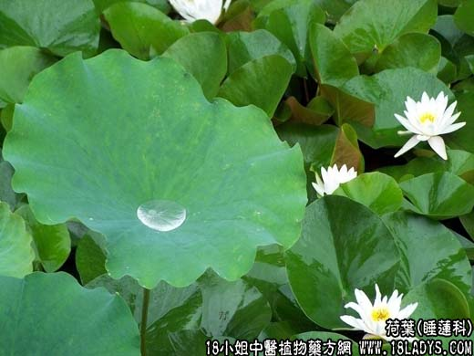

【中药概述】
荷叶为睡莲科水生植物荷的叶。苦、平。归肝、脾、胃经。
1．清热解暑：用于夏感风热，小便短赤等，常与鲜藿香，佩兰，西瓜翠衣等同用。
2．升发清阳：用于脾胃清阳之气不升泄泻痢疾。如（<活法机要>清震汤：荷叶、升麻、苍术）。
3．止血：用于各种出血，如吐血、衄血、崩漏、便血等，可配止血药等同用。
【药效鉴别】
荷叶凉血止血，兼能化瘀，与白芍合用，柔肝止血中寓清凉，清凉中兼能化瘀。
【药理作用】
荷叶的浸剂和煎剂在动物实验中能直接扩张血管，引起中等度降压。
【化学成分】
含荷莲碱、荷叶碱、原荷叶碱、莲碱等。
【用量用法】
本品9——15g，水煎服，或入剂。